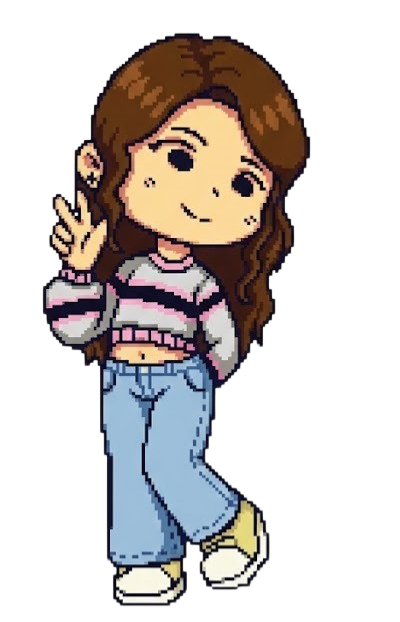
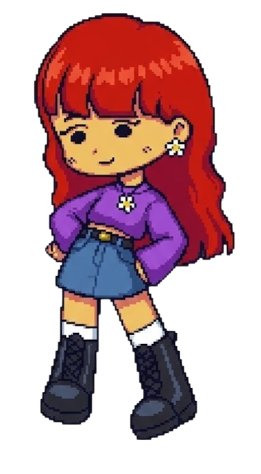

Pixiamiguis
Esta es una página dedicada a las Pixiamiguis. Cada una tiene una personalidad distinta y representa diferentes emociones.
Nuestras Pixiamiguis

zharick🌱
¡Hola! Soy z 🌱 Soy estudiante universitaria y me gusta crear cosas digitales y creativas. Disfruto dibujar personajes, diseñar páginas web y experimentar con animación y pequeños proyectos de programación. Me gusta aprender nuevas herramientas y probar ideas diferentes para ver qué puedo crear con ellas. También me encantan las historias con un toque mágico, los personajes curiosos y las estéticas bonitas o acogedoras. A veces paso mi tiempo dibujando, diseñando o imaginando nuevos proyectos. Este es mi pequeño espacio en internet donde comparto algunas de las cosas que hago, lo que me inspira y mis experimentos creativos. ✨
- Color favorito: Rosa
- Personalidad: Alegre
- Habilidad: Animar a sus amigas

Vane 💜🌷
Holi, soy Vane 💜🌷 Soy estudiante de Ingeniería Multimedia y me gusta crear cosas digitales que mezclen tecnología, arte y un poquito de imaginación. Disfruto diseñar páginas web, crear personajes, hacer animaciones y experimentar con ideas creativas para contar historias. También me gusta explorar proyectos donde la tecnología puede ayudar a las personas o hacer la vida un poquito más fácil. Me encantan los universos visuales bonitos, los personajes con personalidad y los proyectos que nacen de la curiosidad. Este es mi pequeño espacio en internet para compartir lo que creo, lo que aprendo y las ideas que se me ocurren. ✨🌸💻
- Color favorito: Azul
- Personalidad: Reflexiva
- Habilidad: Dar buenos consejos
Actualmente
- Estado mental: Pensando en la vida
- Actividad: Haciendo una página web
- Frutiamiga favorita: Mora Azul